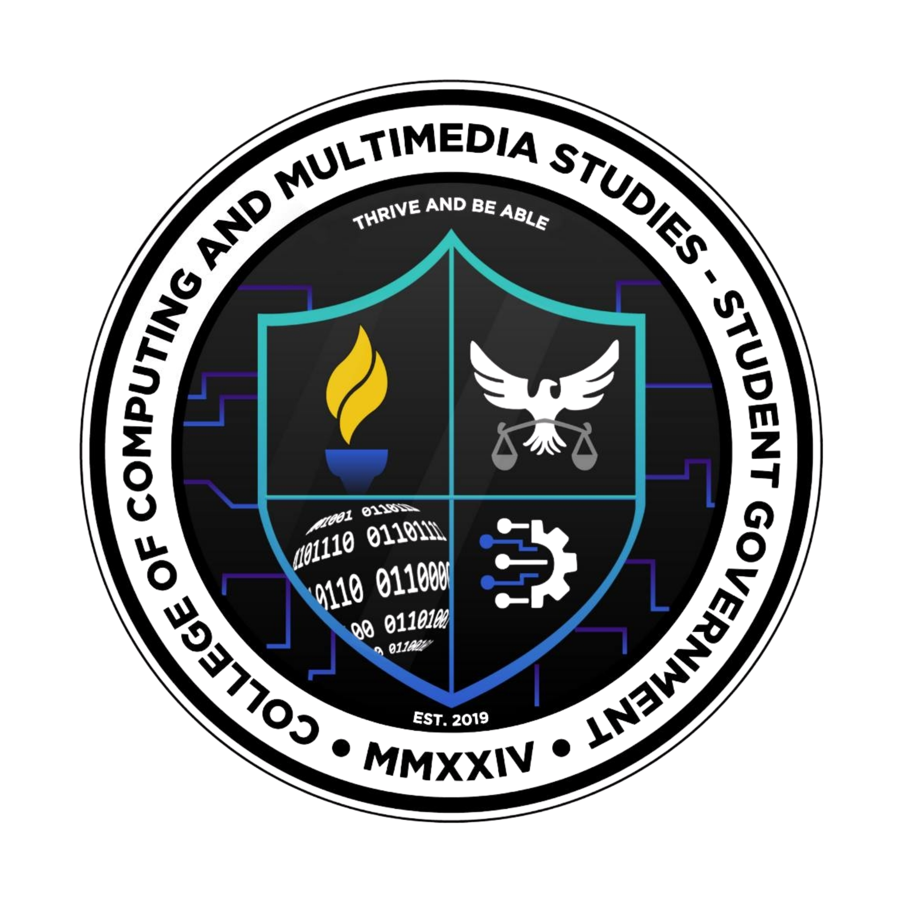
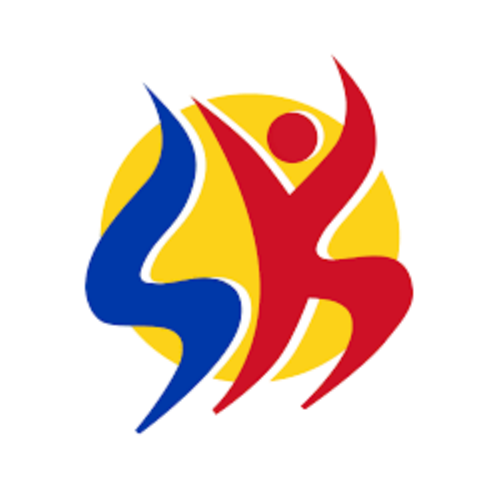

CCMS Student Government
Multimedia Officer
Currently serving as Multimedia Officer for the CCMS Student Government during the academic year 2025-present.
Key Responsibilities:
- Creating visual content and promotional materials
- Designing graphics for social media and announcements
- Documenting events through photography and videography
- Managing digital communication channels
- Ensuring effective visual representation of activities
- Supporting student government initiatives through multimedia
CNSC University Student Supreme Government
Committee on Guidelines and Policies
Member of the Committee on Guidelines and Policies under the University Student Supreme Government at Camarines Norte State College.
Key Responsibilities:
- Reviewing and developing student policies
- Refining organizational guidelines and procedures
- Ensuring compliance with university regulations
- Advocating for guidelines promoting student welfare
- Contributing to organizational effectiveness
- Representing CCMS in university-wide governance
CCMS Student Government
Junior Council - Project Monitoring Development Committee
Served as a member of the Junior Council Project Monitoring Development Committee under the CCMS Student Government for the academic year 2024-2025.
Key Responsibilities:
- Overseeing and evaluating student projects
- Ensuring alignment with organizational goals
- Contributing to initiative development
- Monitoring project implementation and progress
- Collaborating with fellow council members
- Supporting CCMS student activities and programs

Save Me Organization
Active Member
Active participant in Save Me Organization, engaging in advocacy and community service initiatives.
Key Activities:
- Participated in humanitarian and outreach programs
- Engaged in advocacy campaigns
- Community service and volunteer work
- Fostered empathy and social responsibility
- Developed leadership through service
- Contributed to various social causes
Teatro Bughaw
Theater Group Member
Participated in Teatro Bughaw theater group, engaging in stage performances and dramatic arts.
Key Activities:
- Performed in various theatrical productions
- Engaged in dramatic arts and stage acting
- Cultural presentations and performances
- Fostered creativity and artistic expression
- Developed performance skills and stage presence
- Collaborative teamwork in productions

Purok Youth Leader
Youth Leader
Served as Purok Youth Leader, representing and advocating for the youth in community development initiatives.
Key Responsibilities:
- Represented youth in community development
- Organized youth activities and programs
- Facilitated communication with barangay officials
- Promoted youth empowerment initiatives
- Led community service projects
- Fostered civic engagement among young residents